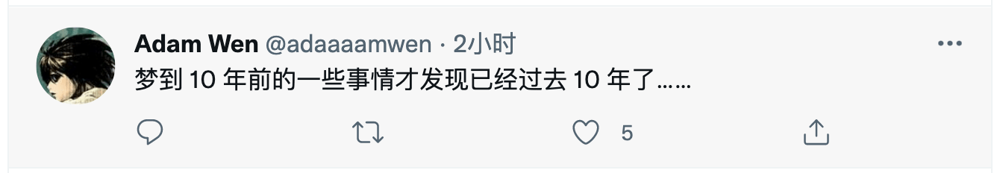

2022 年第一季度总结
这里记录下第一季度自己的一些想法，为了日后翻阅方便！
- 一月
- 程序员的财务独立之路
- 好好自由多彩的生活
- 时光一去不复返
- 开源软件的赚钱方式
- 二月
- 三月
一月
希望新的一年，世界能比去年和平些！
去年一月份的标语也是「希望新的一年，世界能比去年和平些！」，但是明显今年还是不够太平，疫情的再次到来，使原本安逸的生活多了一层阴霾。我也已经有些累的，不想再说这次疫情的孰对孰错了，奈何一股神秘力量驾驭着这一切。希望西安这波疫情早点过去，新年新气象，西安，长安、常安。
一 程序员的财务独立之路
可以试试将 财务独立 作为自己的人生目标！
作者 20 岁时第一次当实习生，发现在 IT 行业，普通人有可能在 30 多岁就实现 财务独立，不再为维持生计和支付日常账单而劳碌。以前，他一直以为每个人都需要工作到退休。从此，他就将财务独立作为自己的人生目标。
- [1] 首要的努力方向，就是追求工资提升
普通人的收入来源，主要还是本职工作，如果工资很低，根本不可能实现财务独立，所以必须想方设法提高工资。一般来说，大厂的高级职位可以拿到稳定的高工资。所以，他要求自己一定要进大厂，并且做到高级工程师。
- [2] 每过三年，就到别处面试
他一般三年换一家公司，这样可以获得显著的加薪和晋升。他说每次换公司，收入至少增加 30%。另外，还可以让自己始终拥有一种进取的心态，不断处于学习和成长的环境之中。不过，换公司是双刃剑，为了获得更高的薪酬，就需要在面试和工作中给别人留下深刻印象，后面的公司对你的要求也会越来越高。
- [3] 建立良好的职业履历
要通过大厂的面试，必须有良好的职业履历。不过，IT 行业跟律师和金融业不一样，就算没有名校经历，只要自身水平过硬，也能求职成功，只是开始时的机会可能会少一些。
- [4] 优先加入增长最快的领域
一个行业增长越快，产生的机会越多，越容易涨工资。在机会面前，你不要害怕改变专业领域。他是硬件工程师出身，进入行业时在英特尔做硬件。后来发现互联网机会更大，他就跳到互联网公司当软件工程师。现在，机器学习很热门，他又去尝试这个领域。
- [5] 投资你的钱
有了积蓄以后，不要让钱在银行闲置，要学会投资。他的很大一部分资产是股票，虽然投资过程中经常遭遇损失，但还是比放在银行增长快得多。
- [6] 节制消费
想要财务独立，一定要控制消费。他认为，钱要花在生活必需品，不要花在奢侈品。钱也不要用于享受，但可以用来增加体验。他说自己始终认为，跟物质享受相比，财务独立才是人生最大的奢侈品。
二 好好自由多彩的生活
疫情结束，好好生活，加油！
在听到摇滚乐的每一个角落，你都是自由的。去到现场，是不会有身份，职业，年龄，地域，性别的界定，你就只是一个来听摇滚乐的人，除此之外，别无其他。你单纯的像一个虔诚的信徒，我想，也许这就是摇滚存在的意义，让你忘却，让你疯狂，而让你苏醒。
我怀念的 2019 啊，终将只能停留在记忆里，不能陪我去到从那以后的任何时候。我把青春另存了，再次相见的时候，我应该不再会那么疯狂，但也请把酒倒满，把我灌醉，让我再次为你们跳一支舞。
三 时光一去不复返
时光一去不复返，往事只能回味。

四 开源软件的赚钱方式
需要慢慢适应软件付费所带来的便利
今天有人在群里看到有人问了一些关于开源软件赚钱的问题，感觉有人说的挺不错的，所以这里记录一下，谈谈自己对于其的理解：
- rickyrick
https://juicefs.com/pricing这种开源产品怎么赚钱啊？提供开源版本自己build，我们组里直接自己build一个，然后一分钱没给
- 伊
- 那期播客有说，他们本身就没烧钱，收支平衡和略赚点儿才开源的，做了好多年了
- 不是上来就开源，以后咋赚钱大概是云服务吧，或者是企业支持那种 - 拍脑袋瞎猜
- S02E01 从商业到开源社区，聊聊 JuiceFS 的开发者招聘_开源面对面
- 老 C
- 好问题。。。这种产品的用户是给那些用云的客户
- 我司
databend也是类似的商业模式，用户都是用商业云，所以基于开源自己搭建的那种不在商业考虑范围里 - 底层逻辑是：一份数据想要在各种云里都有备份的时候，就用这类产品
- 伊
- 挺有意思的，俩创始人都是豆瓣出来的，就好奇豆瓣真的出来了好多人似的
- rickyrick
- 我们老板用
JuiceFS就是为了存算分离 - 不懂，想了几分钟我也不懂怎么赚钱哈哈。技术行的公司直接用它的开源版本，可能偶尔需要企业支持（付费）？技术不行的公司（比如国企？）也不会去想什么存算分离，直接全套外包？
- 我们老板用
- 老 C
- 你不要考虑技术行不行。。。
- 要考虑有多少公司的服务，现在是上云的：
AWS、腾讯云、阿里云等等。。。 - 你还没有捋清楚，一方面是你对
JuiceFS做什么的，还不够清楚。。 - 用户的服务要跑在这各种存储下面，JFS 就帮他们屏蔽了这些差异化
- 用户可以去说，我只管我的服务在
AWS一份，同时在腾讯云一份，然后通过JFS写进去的时候，这个产品自动帮你写两份在这两种云里面，这种用户才是他考虑商业的用户
- rickyrick
- 嗯，这我知道，那开源版本依然是免费的，开源版本也能做这些事
- Wang Ziting
- 最近因为
Docker Desktop收费的事情，对开源商业双版本的软件有了一些新的体会。很多软件比如GitLab、Docker、Ubuntu都有开源版和商业版两个版本，但应该把哪些功能做在商业版里呢？我现在是觉得要让开源版做「酷的功能」，吸引用户和开源贡献者，而让商业版去做「又脏又累的活」，比如对老架构的兼容，这些是开源社区不太可能做好的，有需求的商业用户必须得掏钱。
- 最近因为
- 170
- 我一直以为
s3客户端兼容所有云的对象存储服务 不都是aws设计的s3 api吗？ - 国内是这样。但是放国外公司的话，他们就喜欢花钱买服务了。要考虑到你雇一个月搭起来后面怎么维护，遇到问题怎么解决，这个人学习这套技术的成本，花多少时间才能媲美人家第一方的服务，如果有问题雇员解决不了怎么办？他离职之后能招到人吗？这些问题解决之后，成本和第一方服务相比哪个多？另外，假如故障造成了经济损失，雇员能提供的补偿（几乎为
0）和第一方服务协议里面的赔偿也是不能比的。 - 以上的问题也都可以解决，毕竟现实就是国内用户使用云服务的付费意愿远低于国外。大家比较喜欢自研或者基于开源二次开发。我接触过的开源商业化产品基本都重心出海赚外国人的钱。买服务还节省了团队管理成本啥的，总之省心。
- 国内还有一个原因就是你做的事情越大，带的人越多，你就可以升职加薪 😂
- 我一直以为
- 老 C
- 用云服务和自建区别就是这里：是别人的服务稳定、成本低，还是你自建的团队稳定、成本低，以及出错时候的补偿，学到了。国内倾向于自建，恐怕还是因为。。。。人力不值钱吧？
- Wang Ziting
- 还有很多原因，比如国外产品付款流程（如发票）困难，因为墙的原因无法顺畅使用。即使是国内的服务，因为监管的原因，在核心业务中每引入一个第三方服务都有很大的风险，比如因为监管原因无法继续使用，甚至先停服务再通知。人少的话买服务的财务流程的成本可能比价格都高了，不如用开源项目自己折腾。
确实开源产品想赚大钱，首先就是需要有大量的用户群体，之后在区分开源版本、商业版本，开源版本提供绝大多数功能，商业版本提供大规模使用的痛点和技术支持。我司其实也搞过一段时间的开源产品，但是不到半年就有决定不在开源了。我认为比较好的路就是：SaaS。主要是面向客户提供线上服务(挣只要钱)，部分为企业和大公司提供定制化开发，就是走交付路子(挣大块钱)。
但是，国内走 SaaS 还是有政策风险的，说不定就搞不下去了。而且地区开源没多少意义，要做就做世界开源，从一开始，文档、项目，都应该全面英文化，走国际化的路线。不然，最后做出国产产品就尴尬了，很局限，被层层束缚住，为了 等保，合规，国产化 苦苦而活，就像在垃圾场捡垃圾一样。
最后，需要说的就是，在国内做 SaaS 的话，很容易被其他公司仿制，小心他们变成你的直接竞争对手，所以所在的行业还是需要有一定的技术壁垒的，不然最好还是做不大。